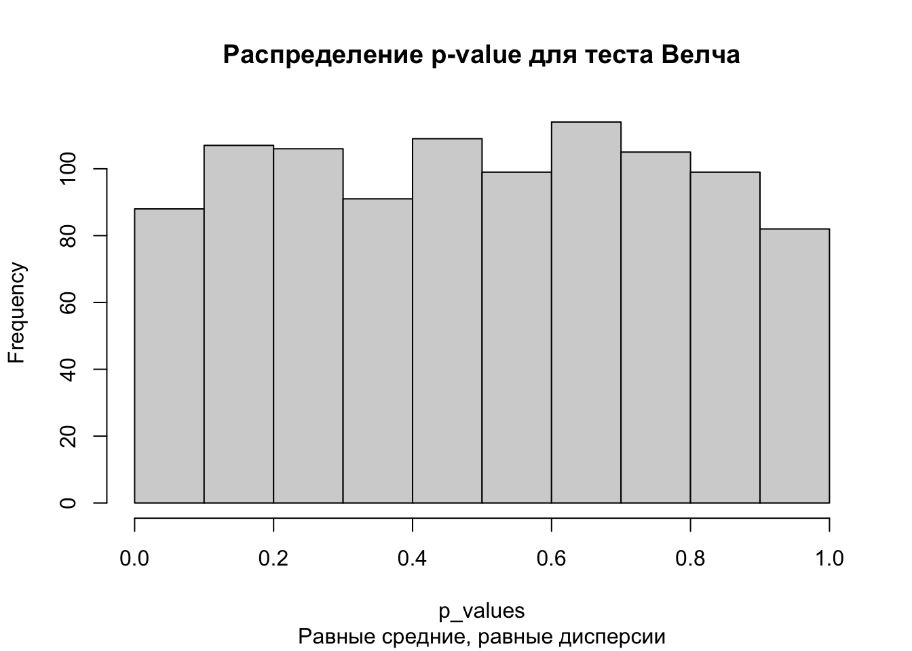
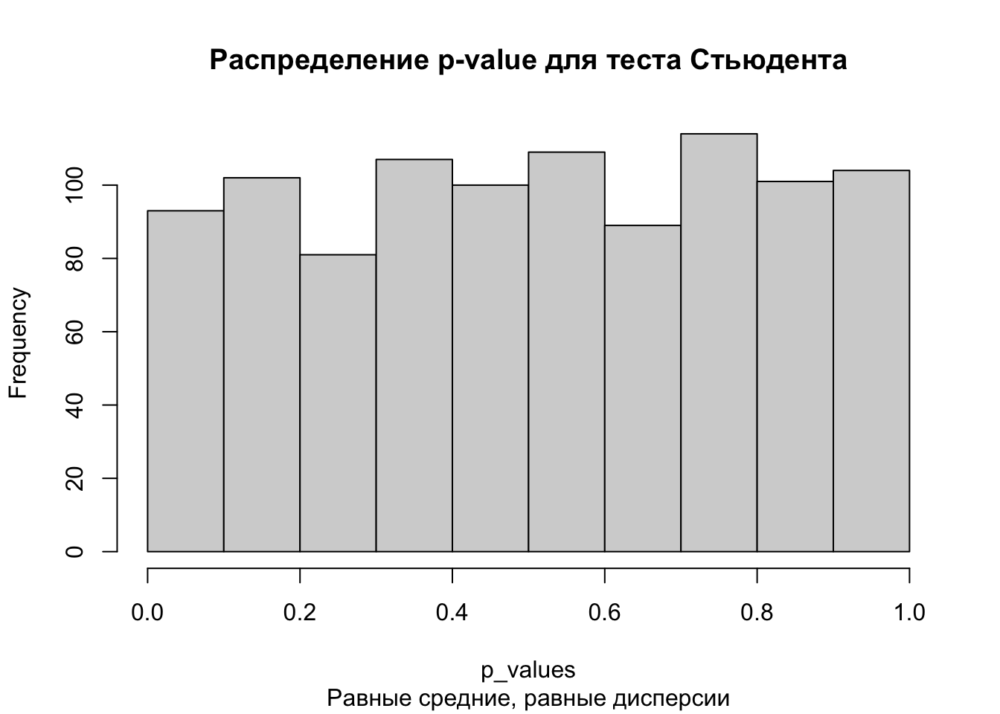
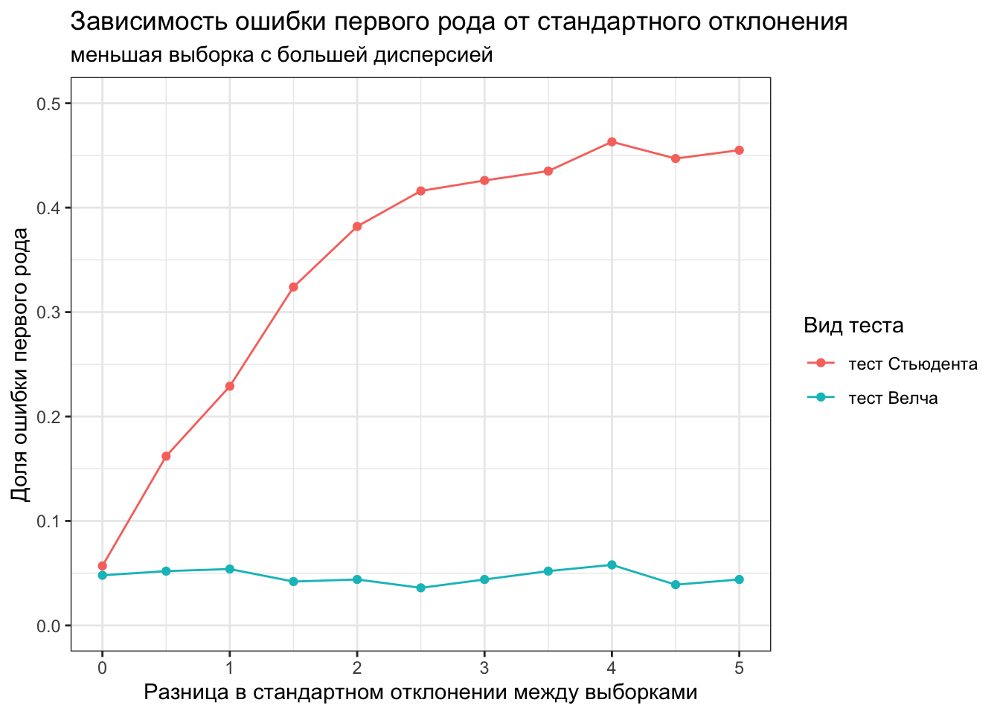
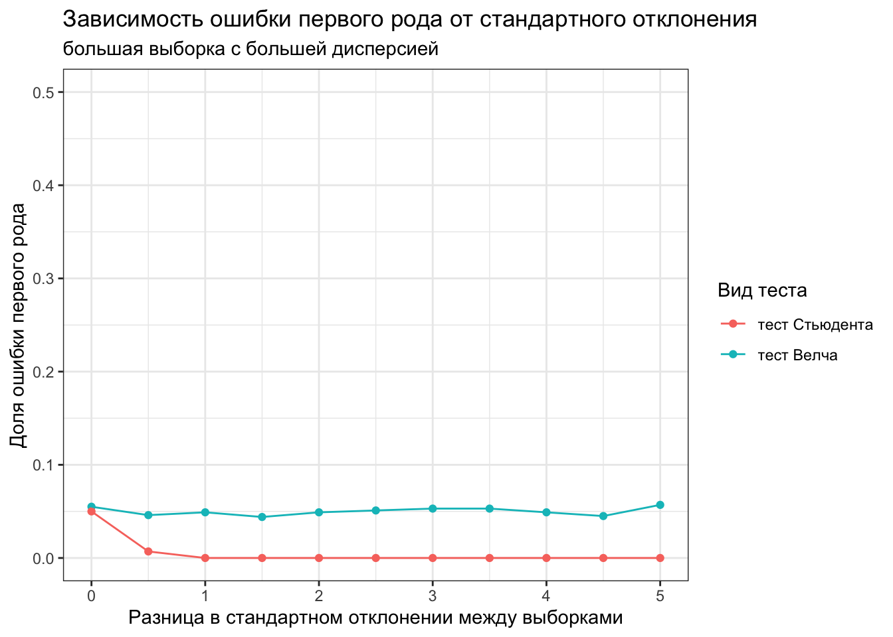

Наверняка каждый при проведении статистических тестов сталкивался с проблемой выбора подходящего теста. В научном сообществе есть определенная популярность у “дорожных карт” по выбору статистического метода, пример ниже:
Можно кликнуть на картинку и перейти на изображение в лучшем качестве
Я выбрала первую попавшуюся схему по запросу how to choose statistical test flow chart, в этой схеме есть сразу несколько ошибок, например миф про 30 наблюдений (тут вообще странное, по мнению автора схемы, при размере выборки больше 30 наблюдений можно использовать z-test).
Обычно этот миф звучит так: для небольших выборок меньше 30 наблюдений для применения t-теста нужно, чтобы было нормальное распределение данных, а если наблюдений больше 30, то можно использовать t-тест и так, в силу центральной предельной теоремы. Почему это миф, написано в статье “История одного обмана или требования к распределению в t-тесте”.
Статья подвергалась определенной критике профильных статистиков, но ключевой момент отражен верно — для t-теста не нужно нормальное распределение данных, нужно нормальное распределение тестовой статистики — то есть выборочных средних. Про это подробно собирается написать статистик Матвей Славенко, я обязательно сделаю репост, когда статья выйдет, очень нужен для сообщества такой материал.
Но вернемся к тесту.
Тест Велча: теория
Часто также можно встретить требование к равенству дисперсий для теста Стьюдента и это правильное требование, если использовать классический тест Стьюдента. Однако в большинстве статистических пакетов, в том числе в R, реализован тест Стьюдента с поправкой Велча (Welch) или просто тест Велча, для которого нет требования по соблюдению равенства дисперсий.
Чтобы запустить именно тест Стьюдента в R, можно использовать аргумент var.equal = TRUE.
t.test(rnorm(100, mean =0, sd =1), rnorm(100, mean =0, sd =1), var.equal =TRUE)
Two Sample t-test
data: rnorm(100, mean = 0, sd = 1) and rnorm(100, mean = 0, sd = 1)
t = 0.29237, df = 198, p-value = 0.7703
alternative hypothesis: true difference in means is not equal to 0
95 percent confidence interval:
-0.2274987 0.3066976
sample estimates:
mean of x mean of y
-0.02237109 -0.06197055
Однако это делать не рекомендуется, поскольку при равных дисперсиях тест Стьюдента не будет сильно отличаться от теста Велча, а при разных тест Велча точнее.
Формула теста Велча:
\[
t = \frac{\overline{X}_1 - \overline{X}_2}{\sqrt{\frac{s_1^2}{n_1} + \frac{s_2^2}{n_2}}}
\]
Для обучения я обычно рассказываю тест Стьюдента без поправки Велча, потому что на нем проще посчитать вручную тестовую статистику и степени свободы, однако потом обязательно уточняю, что для теста Велча требование равенства дисперсий необязательно. При этом в источниках часто можно встретить требование к равенству дисперсий, как и к нормальности распределения исходных данных.
Однако наиболее критичным требованием для проведения теста Стьюдента является независимость наблюдений, потому что от этого нарушаются математика теста и результаты получаются ненадежные.
Проверим на симуляциях
library(tidyverse) # загрузим тайдиверс
Разберем разные кейсы: проверим и ошибку первого рода, и мощность теста при равных и разных дисперсиях .
Здесь и далее тестом Стьюдента будет называться тест Стьюдента без поправок, а тестом Велча - тест Стьюдента с поправкой Велча
Отличий нет, проверка на ошибку первого рода
Одинаковое среднее и дисперсия, равный размер выборок
Начнем с ситуации, когда у нас обе выборки из генеральных совокупностей с одинаковым средним и дисперсией, например, здесь это нормальное распределение со средним 0.2 и стандартным отклонением 1.
Note
Здесь и в дальнейшем для симуляций будет создаваться генеральная совокупность (размером 100000) с заданными параметрами среднего и стандартного отклонения, а далее будут многократно извлекаться “выборки” заданного размера. Таким образом будет соблюдаться общая логика статистического вывода — наличие генеральной совокупности с заданными параметрами и извлечение выборок.
Тест Велча
population <-rnorm(100000, mean =0.2, sd =1) # создание генеральной совокупностиp_values <-replicate(1000, t.test(population %>%sample(size =10000, replace =FALSE), population %>%sample(size =10000, replace =FALSE))$p.value)hist(p_values, main ='Распределение p-value для теста Велча')

mean(p_values <0.05) # доля p-value, которые оказались меньше 0.05 (прокрасились)
[1] 0.039
Тест Стьюдента
p_values <-replicate(1000, t.test(population %>%sample(size =10000, replace =FALSE), population %>%sample(size =10000, replace =FALSE), var.equal =TRUE)$p.value)hist(p_values, main ='Распределение p-value для теста Стьюдента')

mean(p_values <0.05) # доля p-value, которые оказались меньше 0.05 (прокрасились)
[1] 0.041
Здесь у нас вероятность ошибки первого рода для обоих тестов примерно 0.05, а также распределение p-value похоже на равномерное. Это ожидаемо и корректно, так как выборки извлекались из одинаковой генеральной совокупности, а значит, что доля значимых тестов должна быть не больше заданного уровня \(\alpha\), в данном случае 0.05.
Одинаковое среднее, разная дисперсия, равный размер выборок
Теперь рассмотрим случай с неравными дисперсиями. Для этого создадим две генеральные совокупности с одинаковым средним, но в одной стандартное отклонение 1, в другой 2. Извлекаем две выборки размером 10000 значений и сравниваем их тестом Стьюдента и тестом Велча.
Тест Велча
population1 <-rnorm(100000, mean =0.2, sd =1) # создание первой генеральной совокупностиpopulation2 <-rnorm(100000, mean =0.2, sd =2) # создание второй генеральной совокупности# проведение тестаp_values_welch <-replicate(10000, t.test(population1 %>%sample(size =10000, replace =FALSE), population2 %>%sample(size =10000, replace =FALSE))$p.value)hist(p_values_welch)
Здесь выводы те же самые, как в предыдущем случае. Хоть и дисперсия в генеральных совокупностях разная, оба теста сохраняют долю ошибки первого рода на нужном уровне (меньше 0.05).
Тут важно указать, что размер выборок в данном примере одинаковый. Однако тест Стьюдента без поправки Велча становится неустойчивым с точки зрения ошибки первого рода, в случае, когда у нас выборки сильно отличаются по размеру.
Одинаковое среднее, разная дисперсия, разный размер выборок
Например, в выборке с меньшей дисперсией 3000 наблюдений, в выборке с большей дисперсией 7000 наблюдений.
Примечание
Здесь я написала так для краткости, имелось ввиду: выборки, извлеченные из генеральной совокупности с меньшей дисперсией, содержат 3000 наблюдений, а выборки, извлеченные из генеральной совокупности с большей дисперсией, содержат 7000 наблюдений.
Пример
Такая ситуация может встретиться в A/B тестировании, когда для 30% пользователей мы показываем тестовую версию, а контрольную версию видят 70% пользователей.
Получилось, что тест Стьюдента в ситуации с неравными дисперсиями и разным размером выборки показал себя хуже и мы наблюдали ложные прокрасы в 12% случаев (вместо 5%, как должно было бы быть).
С увеличением дисбаланса в размере выборок, ситуация становится хуже, например, вот что произойдет, если выборки отличаются по размеру в 9 раз (тоже может встретиться в A/B тестировании, пример, что это часто используемая практика по ссылке).
Тут для теста Стьюдента без поправки Велча получилось 24% ложноположительных результатов! Это очень много относительно заданного уровня \(\alpha=0.05\). Получается, что мы будем находить значимые отличия почти в четверти случаев, и принимать неверные решения. Тест Велча при этом сохраняет долю ложноположительных результатов на уровне 5%, как и должно быть.
Для выборок разного размера при увеличении неравенства дисперсий наблюдается дальнейшее ухудшение работы теста Стьюдента.
Давайте построим график зависимости ошибки первого рода от неравенства дисперсий в выборке, где размер выборок отличается в 9 раз (для большей наглядности).
Code
var_size <-seq(0, 5, 0.5)calculate_mean_error_1st_type <-function(x, var.equal) {mean(replicate(1000, t.test(rnorm(3000, 0.2, 1), rnorm(7000, 0.2, 1+x), var.equal = var.equal)$p.value) <0.05)}welch_error_1st_type <-map_dbl(var_size, ~calculate_mean_error_1st_type(., FALSE))students_error_1st_type <-map_dbl(var_size, ~calculate_mean_error_1st_type(., TRUE))data.frame(var_size, welch_error_1st_type, students_error_1st_type) %>%pivot_longer(cols =c(welch_error_1st_type, students_error_1st_type), names_to ='type', values_to ='error_1st_type') %>%ggplot(aes(var_size, error_1st_type))+geom_point(aes(color = type))+geom_line(aes(color = type))+scale_x_continuous(name ='Разница в стандартном отклонении между выборками')+scale_color_discrete(name ='Вид теста', labels =c('тест Стьюдента', 'тест Велча'))+scale_y_continuous(name ='Доля ошибки первого рода', limits =c(0, 0.5))+ggtitle('Зависимость ошибки первого рода от стандартного отклонения', subtitle ='для теста Стьюдента и теста Велча при дисбалансе выборок')+theme_bw()

При этом при равных размерах выборок, разница в дисперсиях не влияет на оба теста.
Code
var_size <-seq(0, 5, 0.5)calculate_mean_error_1st_type <-function(x, var.equal) {mean(replicate(1000, t.test(rnorm(1000, 0.2, 1), rnorm(1000, 0.2, 1+x), var.equal = var.equal)$p.value) <0.05)}welch_error_1st_type <-map_dbl(var_size, ~calculate_mean_error_1st_type(., FALSE))students_error_1st_type <-map_dbl(var_size, ~calculate_mean_error_1st_type(., TRUE))data.frame(var_size, welch_error_1st_type, students_error_1st_type) %>%pivot_longer(cols =c(welch_error_1st_type, students_error_1st_type), names_to ='type', values_to ='error_1st_type') %>%ggplot(aes(var_size, error_1st_type))+geom_point(aes(color = type))+geom_line(aes(color = type))+scale_x_continuous(name ='Разница в стандартном отклонении между выборками')+scale_color_discrete(name ='Вид теста', labels =c('тест Стьюдента', 'тест Велча'))+scale_y_continuous(name ='Доля ошибки первого рода', limits =c(0, 0.5))+ggtitle('Зависимость ошибки первого рода от стандартного отклонения', subtitle ='для теста Стьюдента и теста Велча для равных выборок')+theme_bw()

Таким образом, при одинаковом размере выборок, тест Стьюдента также устойчив и к нарушению предположения о равенстве дисперсий. Однако, чем больше разница в размерах выборки, тем сильнее может повлиять на результаты теста Стьюдента разница в дисперсиях. Поэтому надежно будет использовать тест Велча, так как он сохраняет ошибку первого рода на заданном уровне \(\alpha\) вне зависимости от равенства дисперсий и размера выборок.
Оффтоп
Кстати, и у теста Манна-Уитни не все хорошо в таком примере
Давайте немного усложним и используем логнормальное распределение для проверки ошибки первого рода в случае, когда генеральная совокупность распределена не нормально.
Логнормальное распределение точно отличается от нормального, имеет очень длинные хвосты. Подобное распределение может встретиться например в метрике среднего чека (большинство чеков с не очень большой суммой, но могут встретиться экстремально большие значения).
Даже для логнормального распределения, оба теста контролируют ошибку первого рода на уровне < 0.05.
Если попробовать сделать неравенство дисперсий в логнормальном распределении, то очень сильно изменится среднее, и оба теста будут находить отличия.
Теперь рассмотрим как поведут себя тесты, в случае, когда отличия действительно есть.
Отличия есть, проверка на мощность теста
Разное среднее, одинаковая дисперсия, равный размер выборок
Начнем с ситуации, когда извлекаем выборки из двух генеральных совокупностей с разным средним и равной дисперсией.
В большинстве случаев оба теста контролируют ошибку первого рода и мощность на заданном уровне. Однако у теста Стьюдента есть проблема с ошибкой первого рода (ложноположительные результаты) в ситуации с неравными дисперсиями и разным размером выборок.
Поэтому рекомендация использовать тест Велча вне зависимости от дисперсий остается актуальной